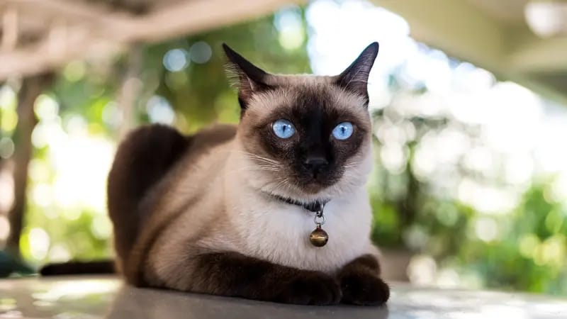
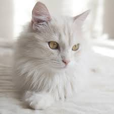
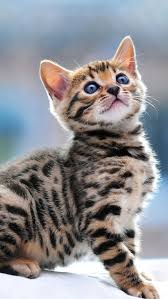

Tempat adopsi kucing adalah sebuah tempat yang penuh kasih sayang dan peduli, yang menawarkan rumah baru bagi kucing-kucing yang membutuhkan. Mereka menyediakan lingkungan yang aman, perawatan medis, dan mencocokkan kucing dengan keluarga yang cocok untuk mereka. Dengan staf yang penuh semangat dan sukarelawan yang peduli, tempat adopsi kucing memberikan kesempatan kedua bagi kucing untuk mendapatkan rumah yang penuh cinta.
BEBERAPA JENIS KUCING
1.BENGAL
2.anggora
3.siam


pelayanan kita
melayani pemesan kucing dan pengiriman kucing sampai kerumah